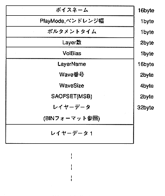

This data is for voice. First, the voice name is 16 bytes in ASCII code at the beginning. Next, we have the following data.
Play Mode | : Specifies the poly, mono, legato, portamento, legato & portamento sound modes. |
Bend range | : Specify the pitch bend change range from 14 levels (0 to $ D). |
Portamento Time | : Specify the time in 128 steps from 0 to $ 7F. |
Layers | : The number of layers used for this voice. |
VolBias | : Specifies the volume of the layer that is sounded in the Voice. Can be specified with a sign. |
LayerName | : The name of the layer you are using. |
Wave number | : Contains the wave number used in this layer. |
WaveSize | : Contains the wave size used in this layer. |